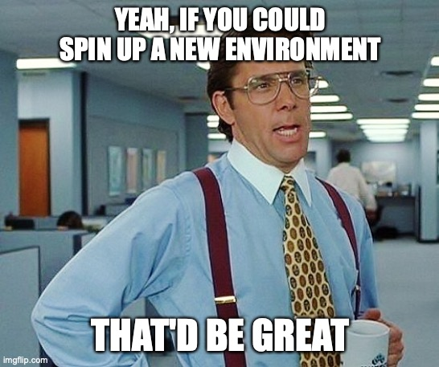
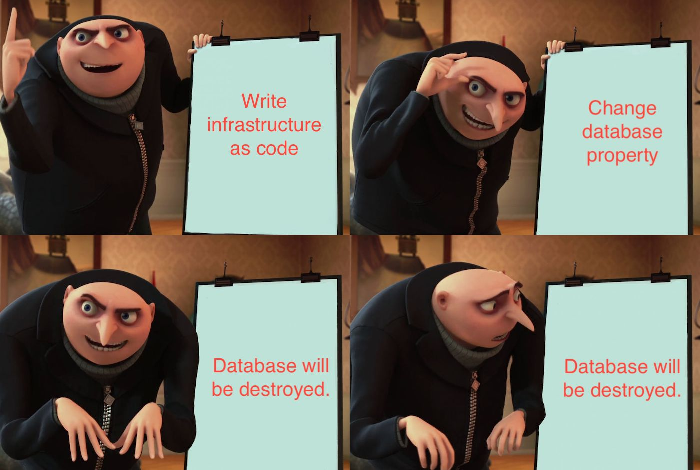

Terraform
Automate your infrastructure using code
Why?
UIs can be cumbersome!

Reproducing environments
Doubles as documentation
Version controlled infrastructure
Flow
Write
Plan
Apply
Building blocks
- Variables
- Locals
- Attributes
- Resources
- Modules
Variables
Strings
variable "name" {
type = string
default = "Fridtjof Nansen"
}
Map
variable "name" {
type = map(string)
default = {
first = "Fridtjof"
last = "Nansen"
}
}
Locals
Strings
locals {
adventurers = ["Fridtjof Nansen", "Roald Amundsen"]
techs = ["Margaret Hamilton", "Steve Wozniak"]
}
Resources
Google Service Account
resource "google_service_account" "fridtjof_nansen" {
account_id = "fridtjof-nansen"
display_name = "Fridtjof Nansen"
description = "Famous Norwegian explorer and diplomat"
}
Refering to variables and locals
resource "google_service_account" "fridtjof_nansen" {
account_id = "fridtjof-nansen"
display_name = var.name
description = local.adventurers[0]
}
Refering to other resources
resource "google_service_account" "fridtjof_nansen" {
account_id = "fridtjof-nansen"
display_name = "Fridtjof Nansen"
description = "Wife: ${google.service_account.eva.display_name}"
}
Lessons learned
Don't overdo abstractions!
Don't hardcode values
Structure your config around cohesive (domain) units
Use workspaces for identical environments